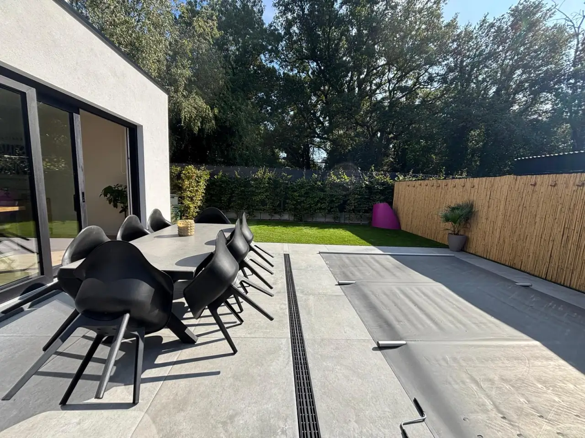

Parking
Tot vier auto’s op eigen terrein. Sleutelkastje, aankomst 16.00 uur.
Privé, verwarmd buitenzwembad in een omheinde tuin in Genk.
Van 1 april tot en met 30 september — afhankelijk van het weer — is het verwarmde privézwembad van Home Terboekt het hart van uw verblijf in Belgisch Limburg.

De tuin is omheind. Ligbedden en een terras voor acht maken van buiten een tweede woonkamer. Binnen: open keuken, ligbad, vier slaapkamers.
’s Ochtends het park, ’s middags zwemmen, ’s avonds koken voor acht. C-mine op tien minuten. Meer uitstappen op Bezoek Genk.
Tot vier auto’s op eigen terrein. Sleutelkastje, aankomst 16.00 uur.
Geen huisdieren, geen feesten. Het zwembad blijft een rustige plek.
Geen buitenzwembad, wél het huis. Ideaal voor een weekendje weg.
Het verwarmde buitenzwembad is in deze periode beschikbaar, afhankelijk van het weer. Schoolvakanties in die maanden vallen in het hoogseizoen.
Geen buitenzwembad, wél de woning: keuken, ligbad, vier kamers, wifi en het Nationaal Park. Laagseizoen loopt van november tot en met maart.
Prijs voor de hele woning, tot acht gasten. Geen verborgen kamertoeslag. Actuele pakketten staan op de prijzenpagina.
Formules en extra’s staan op prijzen. Voorwaarden: huisreglement.
Vraag een reservatie aan voor onze luxueuze vakantiewoning.